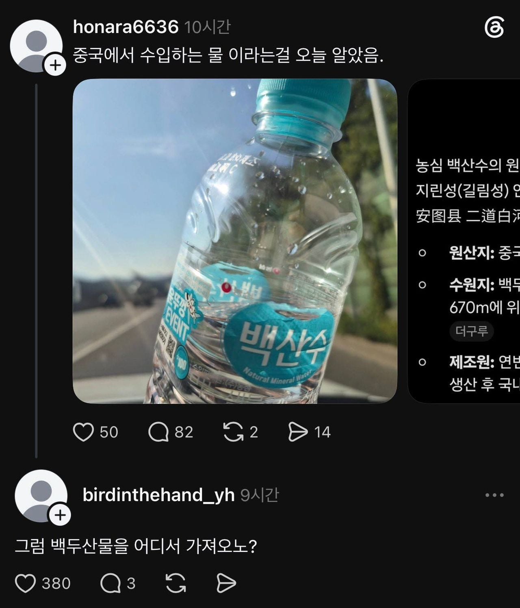

중국에서 수입하는 물 이라는걸 오늘 알았음
댓글
넘 비싸 ㅠㅠ
물 건너기전엔 2L 6묶음 4000원인디 물 건너 가서 얼마임?
제주도에선 2리터 6통이 4천원이여? 바다건너 오면 5 6천원쯤 될껄?
짱두산생수 캬~ 물도 중국산이네 대단하다 농심
물 말고 뭐 또 중국산인거 있어?
라벨 없는건 순수 한국산 물이고
라벨 있는건 외국산 물임
애초에 처음부터 백두산 샘물을 퍼온거라 백산수라고 광고한건데 그럼 뭘 더 바라는거임..? 북한에서 퍼와야함?
ㄹㅇ ㅋㅋ
백두산이 어딘지 모르는거임?
진짜 백두산이 어디있는 산인지 몰랐던 거같은데?
그럼 백두산인데 한국산이겠냐
이름만 따온건줄 알았지..
광고할때마다 백두산 백산수~ ㅇㅈㄹ하잔앜ㅋㅋ
엄마손파이 고래밥 이런거처럼 ㄹㅇ...
근데 짱들 의외로 백두산 관리 빡세게하는거보고 놀램 ㅋ
와짱산이야 했는데 백두산물이면 그럴수있지
진짜 밴두산물임?ㅋㅋㅋㅋㅋㅋㅋㅋㅋ
ㅇㅇ 진짜 백두산 지하수임. 그리고 국내 생수 수질검사에서 삼다수와 함께 가장 등급높은 수준으로 나왔을걸.
그럼 중국산이라고 욕할 이유가 없네...
뭐 중국산인걸 숨기고 광고한거라면 모를까 백산수는 처음부터 백두산에서 퍼온 물이라고 대놓고 광고한 물이라 ㅋㅋ
백두산이 어디있는지 모르는 한국인은 없을테고
중국산이라고 놀라자빠지는 놈이 나올줄을 몰랐지 ㅋㅋㅋㅋㅋㅋㅋ
백두산이 중국 영토 있다는 걸 모르는 사람은 은근히 있을 법함.
초딩때부터 백두산은 한반도와 중국에 걸쳐서 있다고 배움.
근데 머 나무위키보니까 에비앙이랑 동일한 시설이라는데 삼다수랑 같이 안걸린 생수중 하나라고 하기도하고
백산수가 수질검사하면 삼다수와 동급 아닌가?
국내생수들 다 처바르는
그럼 북한에서 퍼오냐
물냄새라고 해야하나? 백산수는 그런게 거의 안나더라
근데 잘팔리는지 가격을 계속 올리길래
요새는 그냥 대형마트 PB 생수 마심
백산수는 삼다수보다 반티어 아래라고 본다
난 정수기가좋아
물 떠서 배로 실어오는거였음?
백두산의 중국명이 장백산(창바이산)인데
장백산수 하면 한국인들이 싫어하니깐
이름 갈이해서 (장)백산수임
ㅇㅎ
아하
백(두)산수인 줄 알았는데 처음 알았네
요즘은 중국에서만부르지만 오랫동안 쓰이던이름이긴함
장백산도 사실 만주족 애들이 부르던거라서 틀린건 아닌데 동북공정이랑 엮어서 거부감 들음
캡틴따거 영상에서 백산수 공장 갔던거 생각나네
북한에 쳐들어가서 퍼올수는 없잖아..
왜 백산임? 짱들꺼라 장-백산임?
그냥 예전부터 불리던 이름중하나임 장백산이
여즌은 중국이나 무협지같은데서나쓰고
정은이한테 받아와야지
만주 벌판을 달리던 고구려 기마부대의 위용을 상상하며 드링킹 하면 국뽕 존나 참 너네들도 해보셈
국산 생수는 이제 라벨 없어서 라벨있으면 수입이거나 혼합음료임
홈카페쟁이들이 레퍼런스로 쓰는 물
비싸던말던 삼다수만 먹음
삼다수가 짱이야